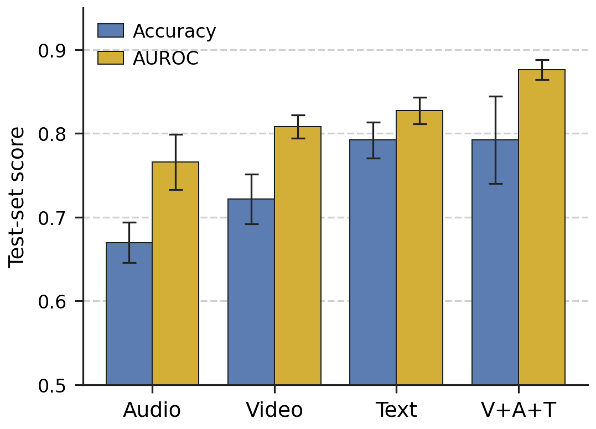

A multi-seed look at multimodal hate video classification on HateMM
Problem. Hateful content online increasingly travels as video, where meaning is carried jointly by visual context, audio delivery, and the spoken message. Single-modality classifiers struggle on cases where these three signals must be combined to distinguish hate from satire or critical discourse.
Hypothesis. A small transformer trained on top of frozen pretrained per-modality encoders can outperform every unimodal baseline on a real corpus of hateful and non-hateful videos, with gains that are not uniform across target communities.
HateMM (Das et al., ICWSM 2023), released under CC BY 4.0 on Zenodo. We use it as-is, without modification or redistribution.
Pipeline in three stages.
Why frozen encoders. Keeping all three encoders frozen makes the modality ablation a fair comparison: only the small fusion head varies between configurations. Restricting the same architecture to a single modality at the input gives our unimodal baselines.
Our first run, with one random seed, showed fusion winning by 5 accuracy points and we almost wrote a paper claiming «fusion wins everywhere.» Re-running across three seeds {42, 1337, 2025} made that gap vanish into seed variance; only the AUROC gain held up.
Lesson. A single seed can deceive. Multi-seed analysis is what separates a confident headline from an honest one.
| Modality | Acc | F1 | Prec | Rec | AUROC |
|---|---|---|---|---|---|
| V + A + T | 0.79 ± 0.05 | 0.78 ± 0.05 | 0.74 ± 0.08 | 0.74 ± 0.08 | 0.88 ± 0.01 |
| Text only | 0.79 ± 0.02 | 0.78 ± 0.02 | 0.75 ± 0.06 | 0.73 ± 0.08 | 0.83 ± 0.02 |
| Video only | 0.72 ± 0.03 | 0.71 ± 0.02 | 0.64 ± 0.06 | 0.68 ± 0.06 | 0.81 ± 0.01 |
| Audio only | 0.67 ± 0.02 | 0.67 ± 0.03 | 0.56 ± 0.02 | 0.71 ± 0.05 | 0.77 ± 0.03 |
| Community | n | Fusion | Video | Audio | Text |
|---|---|---|---|---|---|
| Blacks | 46 | 0.75 ± 0.05 | 0.70 ± 0.04 | 0.59 ± 0.06 | 0.73 ± 0.03 |
| Others | 39 | 0.84 ± 0.01 | 0.74 ± 0.09 | 0.68 ± 0.11 | 0.85 ± 0.05 |
| Jews | 15 | 0.73 ± 0.13 | 0.67 ± 0.07 | 0.71 ± 0.04 | 0.76 ± 0.04 |

Figure 1. Test accuracy and AUROC across the four models, mean ± std over 3 seeds, sorted ascending by AUROC.
Robust ranking gain, noisy threshold gain. Fusion wins AUROC by 5 points over the strongest unimodal (text), with the gap exceeding twice the combined standard deviation. On threshold-dependent metrics (accuracy, F1) fusion matches text on average with markedly higher per-seed variance (std 0.05 vs 0.02).
Text is the strongest unimodal baseline in this dataset, consistent with the verbal nature of much hate content.
Per-community, all fusion-vs-text gaps lie within combined seed variance. On the smallest group (Jews, n = 15) the fusion model's seed std (0.13) exceeds its mean advantage by an order of magnitude.
Fusing three frozen pretrained encoders through a small transformer head robustly improves AUROC over every unimodal baseline on HateMM (0.88 ± 0.01 vs 0.83 ± 0.02 for text). On threshold-dependent metrics the gain washes out into seed variance, a finding single-seed reporting would have missed. Per-community, text alone is competitive with or better than fusion on every reported group, so fusion delivers a calibrated ranking gain rather than a uniform threshold-level improvement over a strong text-only baseline.
Practical implication. Fusion is the right choice for ranking-based pipelines (triage, soft flagging, human-in-the-loop review) where probability calibration matters. For a fixed-threshold binary decision on this dataset, text-only remains a strong and substantially cheaper alternative.